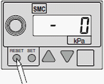
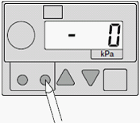
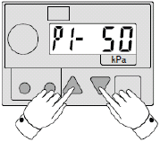
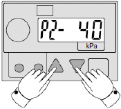
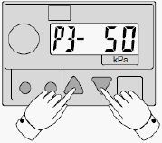
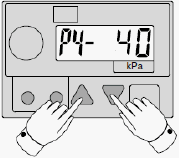

A1-3 How to adjust about vacuum sensor ( 3 )
Vacuum sensor adjustment for NS-6000 on Input arm and Output arm
Basic Setting
1. Make sure that the sensor displays 0 with the power supply ON. If not 0, press the RESET button.

2. Press the SET button once.

3. Press the UP and DOWN buttons and set P1 at −50 KPa.

4. Press the SET button once and use the UP and DOWN buttons to set P2 at −40 KPa.

5. Press the SET button once and use the UP and DOWN buttons to set P3 at −50 KPa.

6. Press the SET button once and use the UP and DOWN buttons to set P4 at −40 KPa.

7. Press the SET button and finish the Setting Mode.
8. Turn ON the Vacuum.
9. Make sure that the display shows the higher negative pressure value than −40 KPa (e.g. −25 KPa) without a device and that the indicator lamp is OFF.
10. While picking up a device, confirm that the display shows the negative pressure less than −50 KPa (e.g. −78 KPa) and that the indicator lamp is ON.
* For small size devices, the pickup nozzle has a smaller diameter, and therefore, the negative pressure difference between with and without the device is small. With this, the detection can be unstable (or impossible) with the Basic Setting above. In this case, change the values of P1 ~ P4.
<Example> With the device: −75 KPa Without the device: −52 KPa
↓
P1, P3 = −65 KPa P2, P4 = −55 KPa